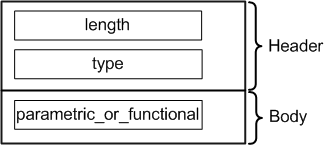

ParametricOrFunctionalTestAttrType
Contains the type of test performed, for example, parametric or functional. The data type is DRLParaOrFuncTestTypeAttr.

Field Name |
Data Type |
Description |
Comments |
|---|---|---|---|
length |
int |
Attribute length |
These fields form the attribute header. |
type |
short |
Attribute type |
|
parametric_or_functional |
char |
Test type |
See the Test Types table below. |
Value |
Description |
|---|---|
0 |
TEST_TYPE_UNDEFINED |
1 |
TEST_TYPE_FUNCTIONAL |
2 |
TEST_TYPE_PARAMETRIC |
3 |
TEST_TYPE_MULTIPLE_PARAMETRIC |
4 |
TEST_TYPE_PARAMETRIC_FUNCTIONAL |
5 |
TEST_TYPE_ANALOG |
6 |
TEST_TYPE_FLEX_DC |
7 |
TEST_TYPE_SCAN |
8 |
TEST_TYPE_MEMORY |
Functional changes
- Introduced before SmarTest 6.3.2